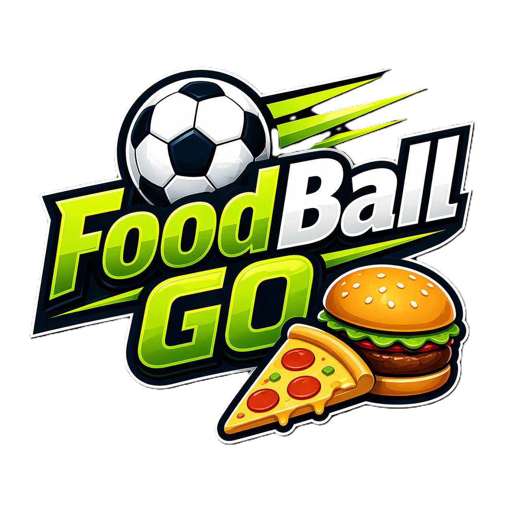
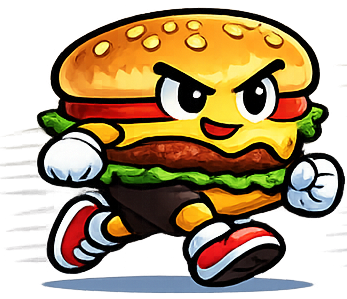
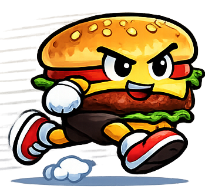

1 contra 1
Muévete, salta y golpea la pelota. Los rebotes, goles y reinicios rápidos hacen que cada segundo cuente.

Fútbol arcade para llevar
Elige a tu héroe de comida, salta, golpea y marca goles en partidos 1 contra 1 contra la CPU. Juega libremente o conquista la Fast Foot Cup.
Desliza para entrar a la cancha

Foodball Go es un juego 2D individual: héroes de la comida se enfrentan contra la CPU en partidos rápidos, dinámicos y llenos de personalidad.
Muévete, salta y golpea la pelota. Los rebotes, goles y reinicios rápidos hacen que cada segundo cuente.
Burger, Pizza, Papas, Taco, Hotdog, Helado, Nacho y Soda: cada uno con su nombre, historia y personalidad.
Configura tu partido en Modo Libre o supera rondas en la Fast Foot Cup hasta convertirte en campeón.
Tu próxima jugada
Juega en Modo Libre o entra al Torneo. Escoge entre las dificultades Fresco, Picante e Inferno.
Configura partidos de 10 segundos a 5 minutos y usa controles táctiles o teclado para moverte, saltar y golpear.
Gana monedas, encadena victorias, consigue recompensas y desbloquea wallpapers exclusivos en el Álbum futbolero.
Elige a tu héroe de comida, marca goles contra rivales cada vez más difíciles y conquista la Fast Foot Cup.
Conoce el juego ↗